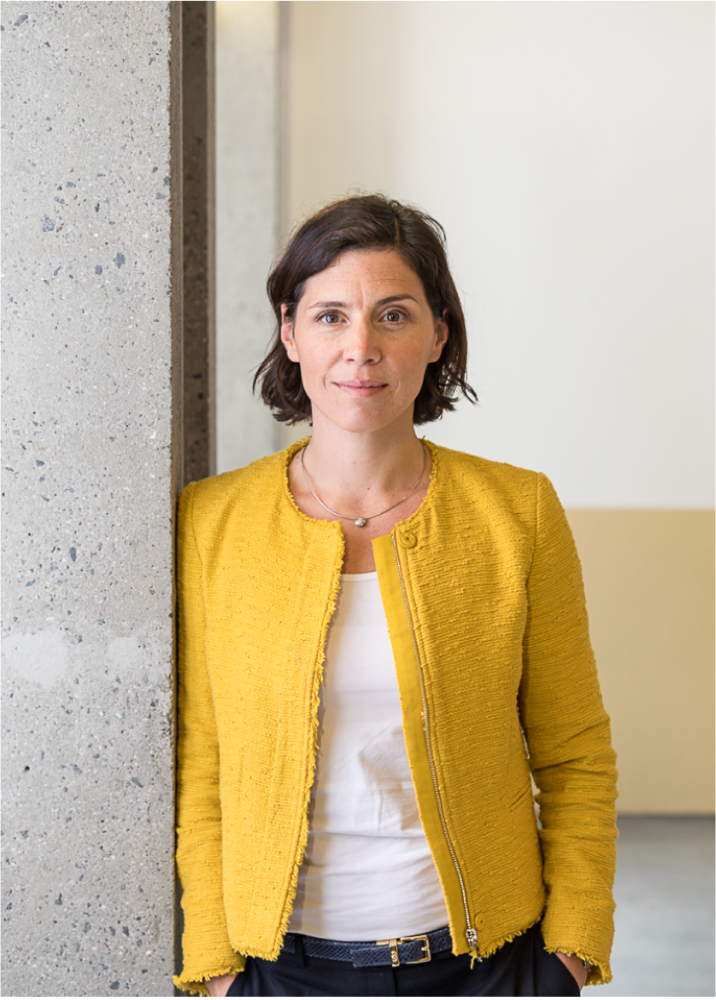

A global view, built across five countries.
Hana Milanov is Professor of Entrepreneurship at IMD in Lausanne. She has lived and worked in five countries, and her research looks at how new ventures get off the ground.
Her work studies how founders spot opportunities, raise resources when they start with very little, and handle the human side of building a company, including questions of identity, team, and career. Before IMD she spent more than a decade at the Technical University of Munich, where she was Senior Vice President for International Alliances and directed the EMBA in Innovation and Business Creation, ranked first by the Financial Times.
What I am interested in.
Who gets to participate in opportunities
I study who gains access to entrepreneurial opportunities and who gets overlooked. Recent work looks at funding gaps in femtech, bias in crowdfunding, and what genuinely creates value for the people who take part.
How opportunities get mobilized
Building a venture takes more than money. I study how founders mobilize resources when they start with very little, the stories they tell, and the networks and stakeholders they move to get going.
How language opens or closes doors
The way we talk about entrepreneurs shapes who feels they belong. I study how confrontational or exclusive language changes who engages, and I translate that critical research into something executives can act on.
- 2026Can Lack-of-Fit Penalties Apply to Male Entrepreneurs? Equity Fundraising in FemtechEntrepreneurship Theory & Practice, with Seigner and Lundmark
- 2023Tweeting like Elon? Confrontational language and new-venture engagementJournal of Business Venturing, with Seigner and Lundmark
- 2021Beyond bricolage: resource mobilization under extreme scarcityJournal of Business Venturing, with Reypens and Bacq
- 2013The power of the first relationship: initial network and future statusStrategic Management Journal, with Shepherd
Teaching & Executive Education
- ApproachParticipant-centered classes from bachelor to PhD, in five countries, and in person, online, and hybrid.
- Corporate programsSiemens, GE Aerospace, and Sandoz. Faculty on the IE-Brown EMBA.
- RecognitionSeveral teaching awards at TUM and IE Business School.
Speaking & Media
- In the pressResearch covered in Forbes (2024 and 2025) on parenthood and startup culture, and on DEI allyship.
- AwardOne of Germany's top 20 entrepreneurship professors (Unipreneurs, 2023).
- EditorialAssociate Editor, Journal of Business Venturing Insights.
- KeynotesUnternehmerTUM, EXIST Women, Motius and Spacewalk, TU Dortmund.
- AdvisoryInvestment committee at Spacewalk VC, and board member at CDTM.
- PodcastsMostly Awesome (CDTM). [CHECK] which to feature

Let's talk.
For speaking, executive programs, research collaboration, or doctoral supervision.
hana.milanov@imd.org